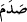
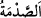

etmek gayesiyle toplanan kâfir nefislerle ve sıfatlarıyla karşılaştığınız zaman onların
saldırıları karşısında bozguna uğramayın. Bilakis bunlara karşı sabırla sebat gösterin.
Çünkü sabır, musibetin ilk gelip çattığı zamandır. Nitekim rivayet edildiğine göre Nebî
(a.s.) ölen çocuğu için ağlamakta olan bir kadına rastlamıştı:
“–Allah’tan kork ve sabret!” buyurdu: Kadın:
“–Benim başıma gelenden senin haberin var mı?” dedi.
Rasûlullah (a.s.) oradan uzaklaşıp gidince, kadına onun Rasûlullah (s.a.v.) olduğu
söylendi. Bunun üzerine kadın çocuğun ölümü kadar da söylediği sözden dolayı (utanıp)
üzüldü. Özür dilemek ve: “Ey Allah’ın Rasûlü, sizi tanıyamadım (bağışlayın!)” demek
için doğru kapısına koştu. Efendimiz: “Sabır, musîbetin geldiği ilk andadır.”
buyurdu.”[12]
“__WORD__” sert bir cismi, kendisi gibi sert bir cisme çarpmak demektir. “__WORD__” de tek
bir çarpma demektir. Hadis-i şerifin belirttiğine göre sâhibinin ecir alacağı sabır,
musîbetin ilk anında olan sabırdır. Çünkü gün geçtikçe artık ona sabretmek kolaylaşır.
“Tekrar savaşmak için bir tarafa çekilme veya diğer bölüğe ulaşıp mevzi tutma”
yani nefisle savaşmak için gerekli hazırlıkları yapma veya ruh ve sıfatlarının yardımına
başvurma, Rabbâniyet makamına ulaşmak için mücâhede ve riyâzat yoluyla nefsi
ortadan kaldırmak ve kahretmek hususunda yardımını istemek için bir şeyhin velâyetine
mürâcaat etme “durumu dışında kim öyle bir günde onlara arka çevirirse muhakkak
ki, o Allah’ın gazabını” O’ndan kovulup uzaklaştırılmayı “hak etmiş olarak döner.
Onun yeri de cehennemdir. Orası varılacak ne kötü yerdir!” yani onun dönüp varacağı
yer, Hazret’ten uzaklık ve ayrılık ateşidir. İşte o ne kötü dönülecek ve varacak yerdir!
[12]. Buhârî, Cenâiz, 32, 43; Müslim, Cenâiz, 14-15; Ebû Dâvûd, Cenâiz, 23;
Tirmizî, Cenâiz, 13; Nesâî, Cenâiz, 22